현대의 사람들은 자신이 속한 커뮤니티의 문화만을 향유하는 것이 아니라 인종 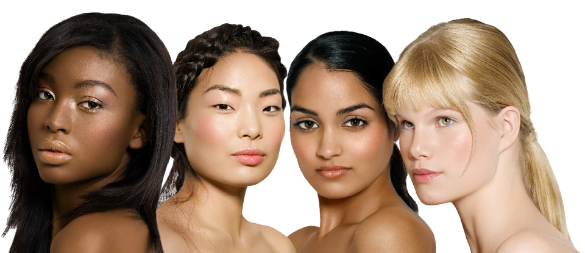 국적  나이 등에 구애받지 않고 다양한 문화를 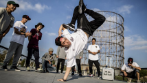 경험하고 향유하며 살아가고 있다. 이는 주류 문화 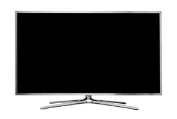 뿐만 아니라 서브컬쳐, 즉 비주류 문화 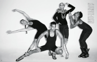 에도 해당된다.
나이 등에 구애받지 않고 다양한 문화를 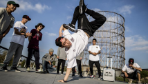 경험하고 향유하며 살아가고 있다. 이는 주류 문화 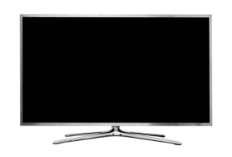 뿐만 아니라 서브컬쳐, 즉 비주류 문화 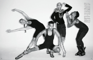 에도 해당된다.
culture
현대의 사람들은 자신이 속한 커뮤니티의 문화만을 향유하는 것이 아니라 인종 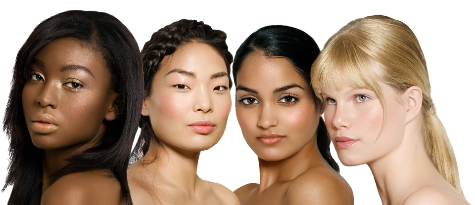 국적 나이 등에 구애받지 않고 다양한 문화를 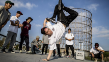 경험하고 향유하며 살아가고 있다. 이는 주류 문화 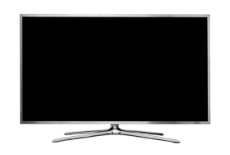 뿐만 아니라 서브컬쳐, 즉 비주류 문화 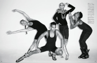 에도 해당된다.
 를 고용했으며, 댄서들과 함께 월드투어를 진행하는 등 보깅의 유행을 이끌었다. 노래의 가사 또한 보깅 문화의 정수를 담고 있다.
를 고용했으며, 댄서들과 함께 월드투어를 진행하는 등 보깅의 유행을 이끌었다. 노래의 가사 또한 보깅 문화의 정수를 담고 있다.It makes no difference if you're black or white If you're a boy or a girl.
If the music's pumping it will give you new life.
 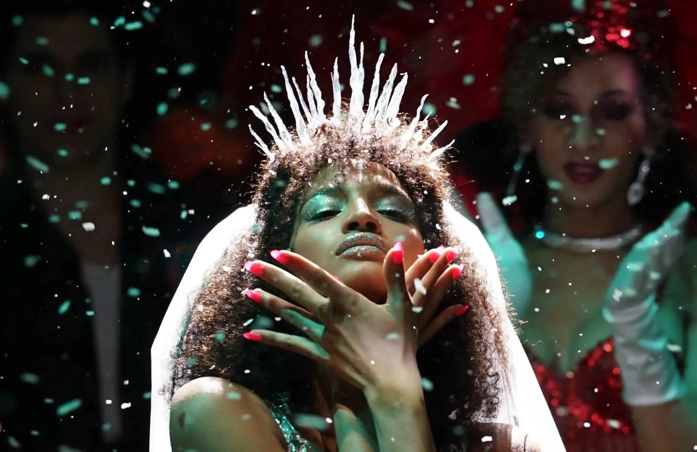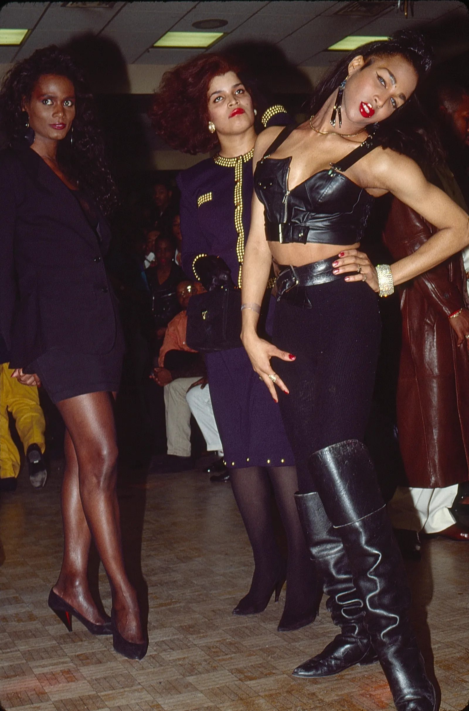 을 마음껏 뽐낼 수 있는 공간이었다. 볼 문화는 19세기부터 뉴욕 퀴어 커뮤니티에 존재했다. 시초는 흑인들이 모이는 클럽
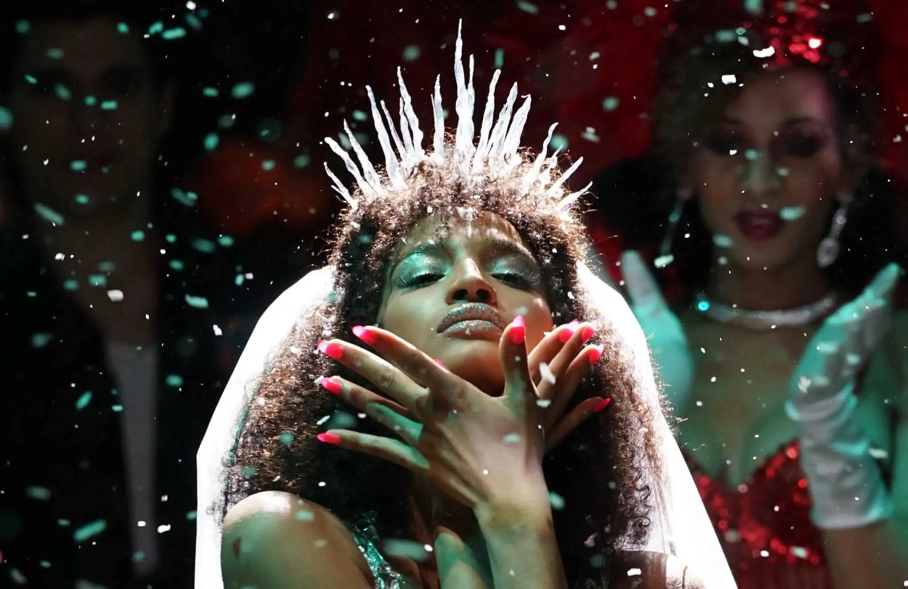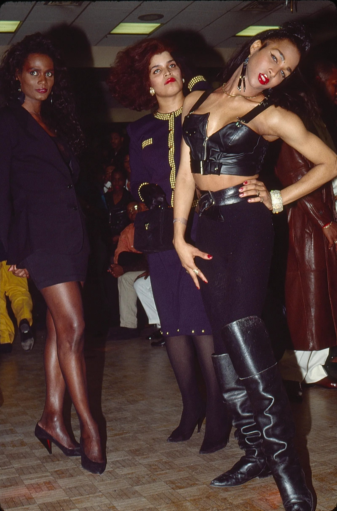 을 마음껏 뽐낼 수 있는 공간이었다. 볼 문화는 19세기부터 뉴욕 퀴어 커뮤니티에 존재했다. 시초는 흑인들이 모이는 클럽  에서 ‘사회가 규정한 성역할’과 반대로 남성이 여성복👗을, 여성이 남성복👔을 입고 가장 멋진 복장 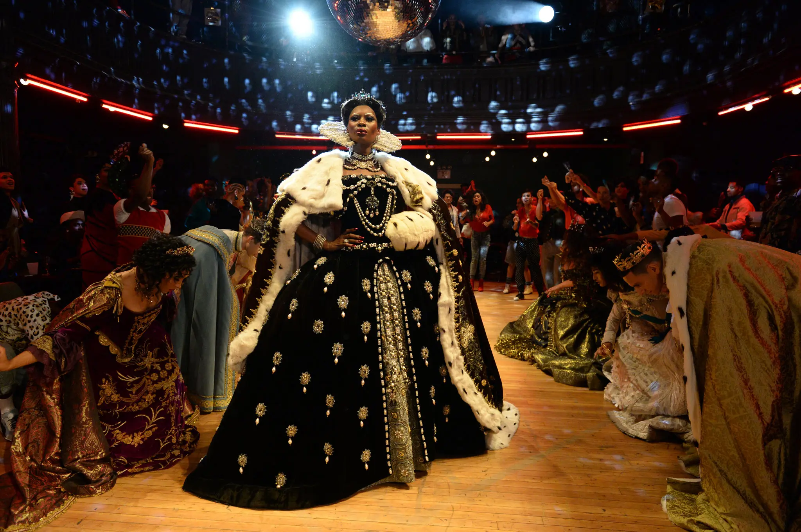 을 입은 사람에게 트로피🏆를 주는 ‘드래그drag’ 행사였는데 이후 규모가 커지고 볼 문화가 부흥하면서 백인의 참여가 늘어났다.
에서 ‘사회가 규정한 성역할’과 반대로 남성이 여성복👗을, 여성이 남성복👔을 입고 가장 멋진 복장 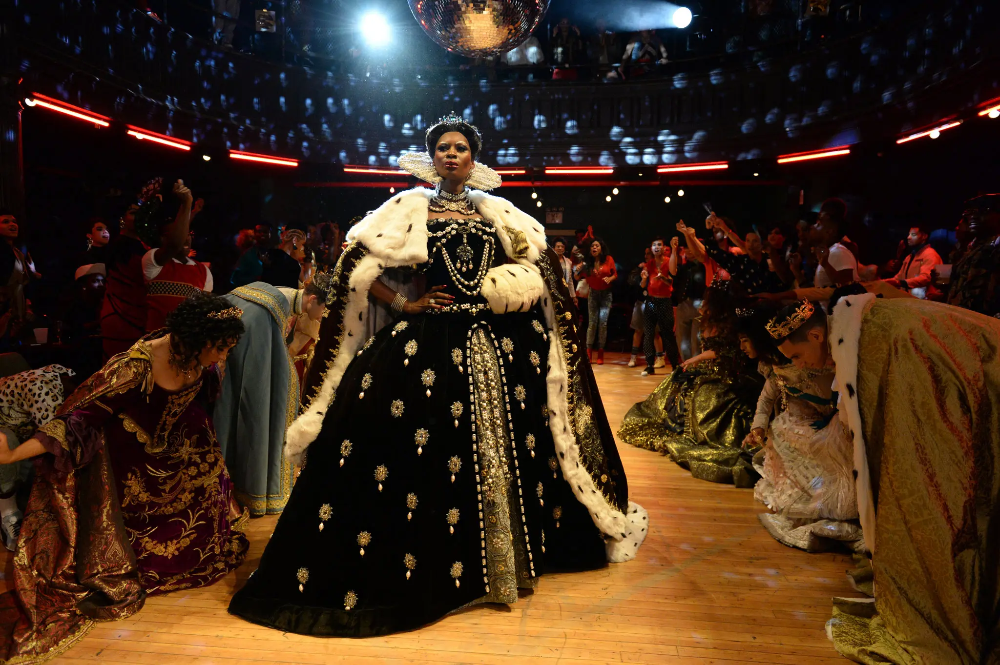 을 입은 사람에게 트로피🏆를 주는 ‘드래그drag’ 행사였는데 이후 규모가 커지고 볼 문화가 부흥하면서 백인의 참여가 늘어났다. *ball:무도회
 음악🎶에 맞춰 포즈 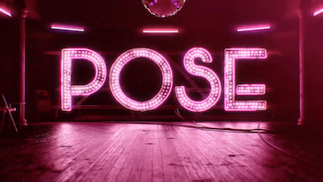 를 잡고 그 움직임을 연결한 것이 춤의 형태로 발전해 보깅이 하나의 댄스💃장르로 자리잡게 됐다. 볼 문화 그리고 보깅이 발전하면서 카테고리는 ‘드레스 코드’의 형태로 정착했다.
음악🎶에 맞춰 포즈 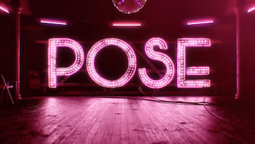 를 잡고 그 움직임을 연결한 것이 춤의 형태로 발전해 보깅이 하나의 댄스💃장르로 자리잡게 됐다. 볼 문화 그리고 보깅이 발전하면서 카테고리는 ‘드레스 코드’의 형태로 정착했다.*category:주제
↔ 트랜스젠더
 이들은 하우스의 칠드런에게 의식주🍽️를 제공하고 볼에서 활동할 수 있도록 도움을 주며 나아가 한 사람으로 성장할 수 있도록 도와주었다. 하우스 문화는 현재까지 계승되고 있지만 마더는 당시와 동일한 역할보다는 정서적으로 의지할 수 있는 어른 혹은 전문적인 조력자의 역할을 하고 있다. 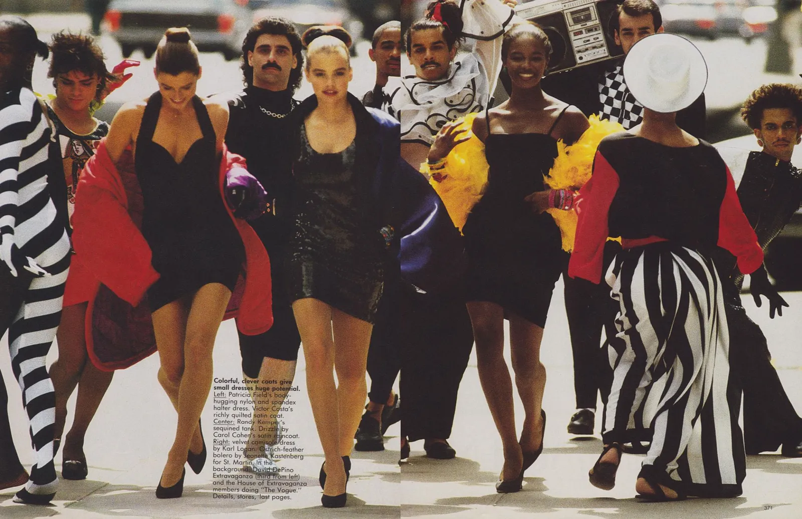 (House of Xtravaganza)
이들은 하우스의 칠드런에게 의식주🍽️를 제공하고 볼에서 활동할 수 있도록 도움을 주며 나아가 한 사람으로 성장할 수 있도록 도와주었다. 하우스 문화는 현재까지 계승되고 있지만 마더는 당시와 동일한 역할보다는 정서적으로 의지할 수 있는 어른 혹은 전문적인 조력자의 역할을 하고 있다. 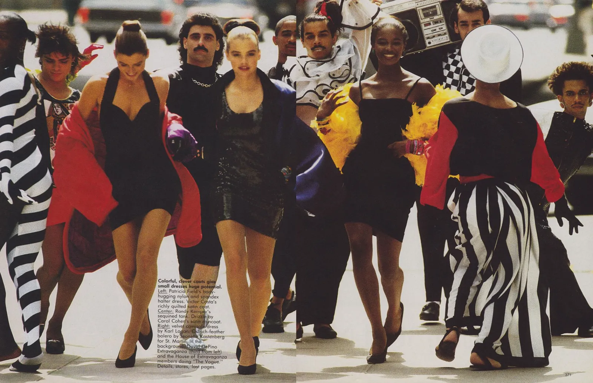 (House of Xtravaganza) 이 있고 이 외에도 동성 부부 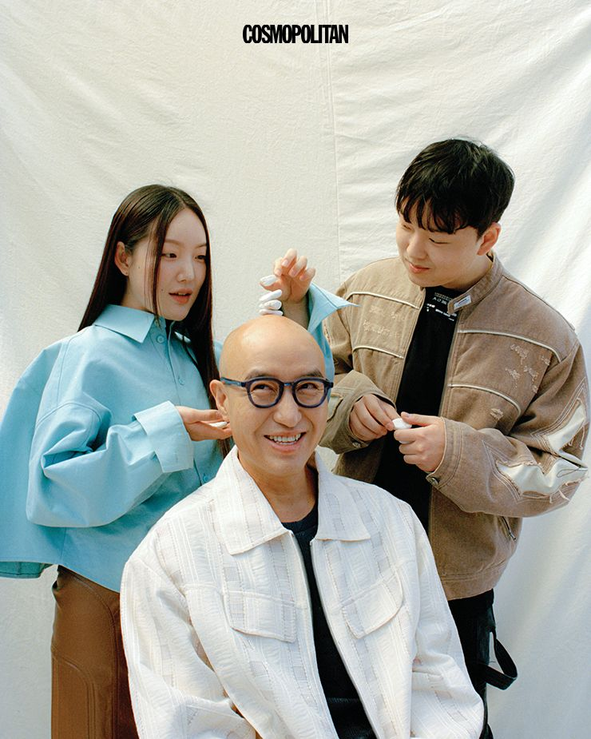 / 1인 가구/ 룸메이트 혹은 친구와 함께 사는 동거 가구 등 많은 형태가 있으며 대안 가족 또한 mark존재한다. 1960년대 뉴욕에 [하우스🏠]가 존재했기 때문에 많은 퀴어들은 ‘나답게’ 살 수 있었다. 또한 그 공동체 안에서 생물학적 가족에게서는 얻을 수 없었던 사랑과이해, 안정감을 얻을 수 있었다. 현대의 사람들이 소위 ‘정상 가족’이라 불리는 전통적인 형태의 가족이 아닌 다른 형태의 가족을 꾸리는 이유도 ‘나다운 삶’을 살아가기 위함이라는 점에서 공통점을 가진다.
이 있고 이 외에도 동성 부부 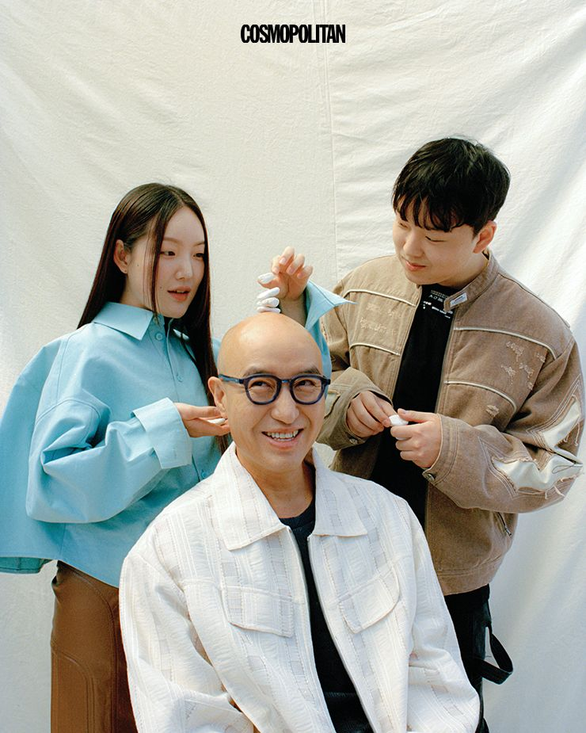 / 1인 가구/ 룸메이트 혹은 친구와 함께 사는 동거 가구 등 많은 형태가 있으며 대안 가족 또한 mark존재한다. 1960년대 뉴욕에 [하우스🏠]가 존재했기 때문에 많은 퀴어들은 ‘나답게’ 살 수 있었다. 또한 그 공동체 안에서 생물학적 가족에게서는 얻을 수 없었던 사랑과이해, 안정감을 얻을 수 있었다. 현대의 사람들이 소위 ‘정상 가족’이라 불리는 전통적인 형태의 가족이 아닌 다른 형태의 가족을 꾸리는 이유도 ‘나다운 삶’을 살아가기 위함이라는 점에서 공통점을 가진다.
 ) 솔라의 (Colors) 등 케이팝 안무에도 보깅이 사용되고 있다. 모두 란을 마더로 둔 [House of Love] 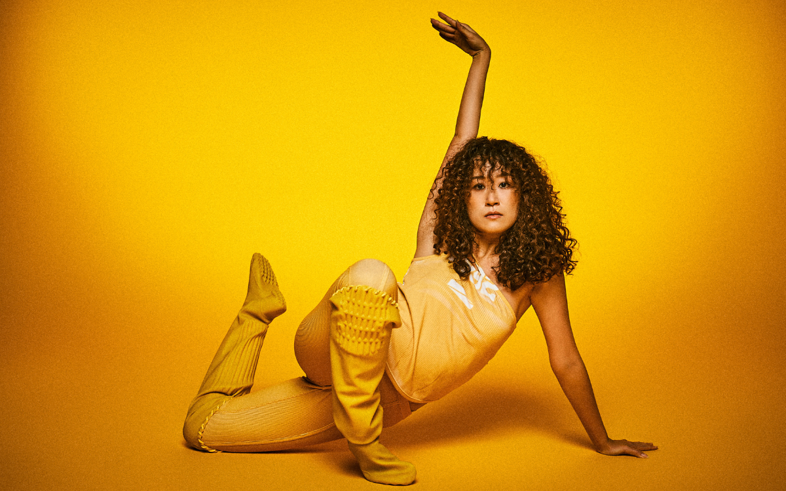 에서 안무를 맡았다. 이 외에도 <퀸덤> 에 출연했던 해준이 마더로 있는 [House of 🌊Seas], 한국 보깅의 심볼이라 할 수 있는 UU가 마더로 있는 [House of Kitsch] 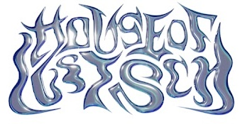 등이 한국의 대표적인 하우스이다.
) 솔라의 (Colors) 등 케이팝 안무에도 보깅이 사용되고 있다. 모두 란을 마더로 둔 [House of Love] 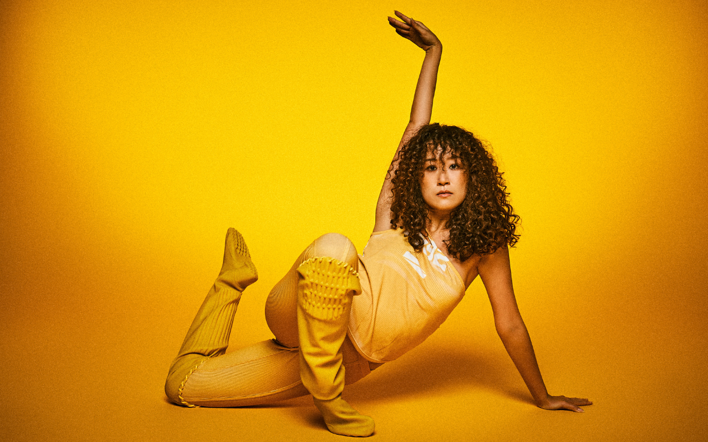 에서 안무를 맡았다. 이 외에도 <퀸덤> 에 출연했던 해준이 마더로 있는 [House of 🌊Seas], 한국 보깅의 심볼이라 할 수 있는 UU가 마더로 있는 [House of Kitsch] 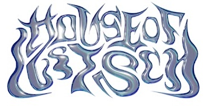 등이 한국의 대표적인 하우스이다.